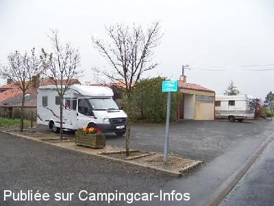
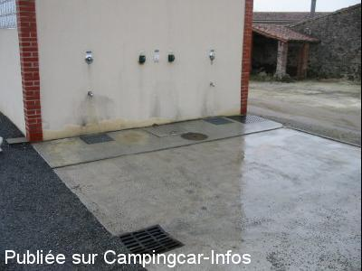
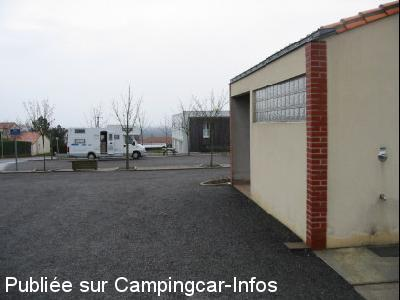
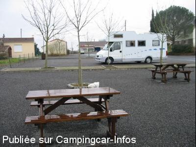

ASN = Aire de services avec stationnement nuit possible de :
LIRÉ
(N° 828)
Accès/adresse :
Rue de la Turmelière
Le Haut Fief
49530 LIRÉ
Le Haut Fief
49530 LIRÉ
Latitude : (Nord) 47.3412° Décimaux ou 47° 20′ 28′′
Longitude : (Ouest) -1.16748° Décimaux ou -1° 10′ 2′′
Tarif : Gratuit
Services :


Autres informations :
Ouverte toute l'année
5 emplacements
Tel : +33 (0) 240 090 802
http://www.commune-lire.fr/

Le 14/04/2009 par philippe et martine du 77

Le 20/03/2003 par Patrickmylene16

Le 20/03/2003 par Patrickmylene16

Le 20/03/2003 par Patrickmylene16
de
Anlo
le 23/09/2014 :
Petite Aire très sympa calme avec commerce à proximité.
A noter la superette est fermée le lundi terrain un peu en pente prévoir les cales.
Petite Aire très sympa calme avec commerce à proximité.
A noter la superette est fermée le lundi terrain un peu en pente prévoir les cales.
de
BEAUMONT
le 09/06/2013 :
excellente aire avec services gratuits dans une région sympathique
excellente aire avec services gratuits dans une région sympathique
de
grardp75
le 07/06/2011 :
de passage le 01/06/2011.
aire bien anménagée en haut du village
vidange eau grise eau noire
eau propre
électricité (2 prises)
6 - 8 places selon que les CC se serrent plus ou moins
nuit calme
tout gratuit
proche de la loire et d'ancenis
a recommander pour une étape d'une nuit ou 2
de passage le 01/06/2011.
aire bien anménagée en haut du village
vidange eau grise eau noire
eau propre
électricité (2 prises)
6 - 8 places selon que les CC se serrent plus ou moins
nuit calme
tout gratuit
proche de la loire et d'ancenis
a recommander pour une étape d'une nuit ou 2
de
kiki41
le 14/07/2010 :
Bonjour à tous. Une aire que l'on aimerait trouver plus souvent, calme, commerce, vue sur la Loire, sanitaires, tous branchements, eau gratuite. Merci au maire.
Bonjour à tous. Une aire que l'on aimerait trouver plus souvent, calme, commerce, vue sur la Loire, sanitaires, tous branchements, eau gratuite. Merci au maire.
de
max
le 16/04/2010 :
Aire agréable et bien équipée. Pour les amateurs de plateau de fruits de mer, voir le restaurant l'Océan. Un grand merci à la municipalité
Aire agréable et bien équipée. Pour les amateurs de plateau de fruits de mer, voir le restaurant l'Océan. Un grand merci à la municipalité
de
Michel
le 14/10/2009 :
Aire au calme, au centre du village, à proximité des sanitaires (propres) et des commerces.
Aire au calme, au centre du village, à proximité des sanitaires (propres) et des commerces.
de
Michel et Roselyne du 44
le 11/09/2009 :
Nous avons apprécié cette aire. Merci M. Le Maire pour cette aire calme et reposante.
Nous avons apprécié cette aire. Merci M. Le Maire pour cette aire calme et reposante.
de
philippe et martine du 77
le 08/04/2009 :
Aire très agréable, très bien conçue et calme. Une étape recommandée entre Nantes et Angers. Félicitations à la Mairie pour cet équipement.
Aire très agréable, très bien conçue et calme. Une étape recommandée entre Nantes et Angers. Félicitations à la Mairie pour cet équipement.
de
Guillot Michel
le 13/10/2006 :
Grille de vidange trop petite - difficile de viser juste - emplacement agréable et calme.
Grille de vidange trop petite - difficile de viser juste - emplacement agréable et calme.
de
RB
le 22/08/2006 :
Aire très sympathique.
Aire très sympathique.